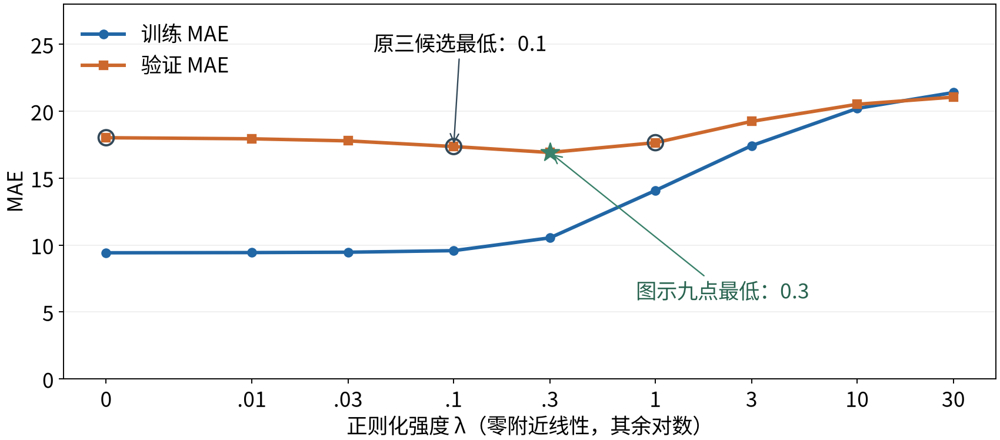
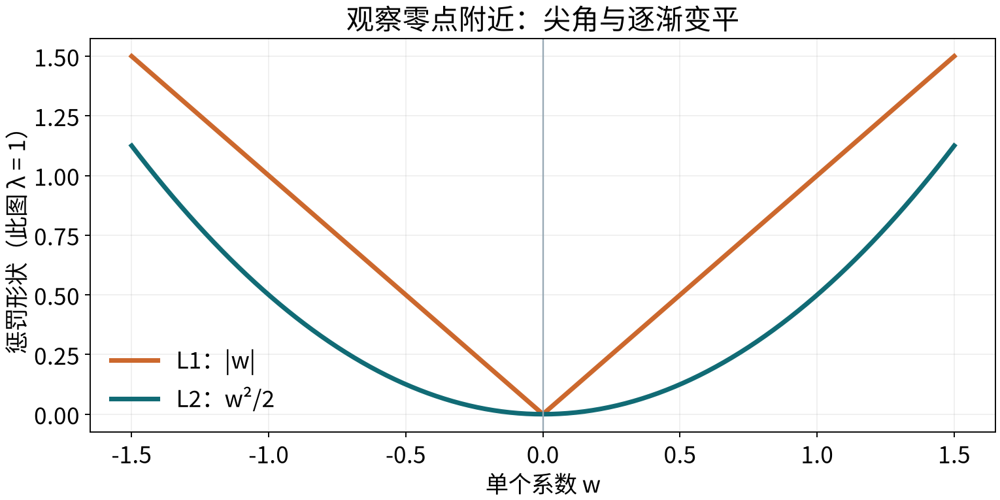

T06 · 机器学习 · 共同理论 · 2 学时
检查训练与验证 → 加入参数惩罚 → 比较有限强度 → 验证选择 → 解释局限
| 方案 | 训练 MAE | 验证 MAE |
|---|---|---|
| A | 8 | 9 |
| B | 3 | 4 |
| C | 1 | 7 |
按事先确定的验证 MAE，应选择谁？
选择 B。A 提示可能拟合不足，C 提示可能过度适应训练记录。
这些是假设结果，不是 B03 输出；迹象不等于原因已经查明。
还要检查优化是否充分、数据质量及训练与验证的分布差异。
个样本、 个特征：
标记样本， 标记特征；所有样本共用一组系数。
降低误差若需要更大系数，还要看改善能否抵消新增惩罚。
纸笔 A · 先计算，再比较目标值
| 方案 | 训练半均方误差 | 系数 |
|---|---|---|
| A | 1 | [3,4] |
| B | 2 | [1,2] |
| 方案 | 系数平方和 | ||
|---|---|---|---|
| A | 25 | 1 | |
| B | 5 | 2 |
不加惩罚时 A 较小； 时 B 较小。
固定强度比较给定参数的训练目标；泛化仍需验证证据。
不保证每个系数按相同比例或逐个单调缩小；观察范数不等于判断验证最好。

32 个训练、48 个验证样本；只用训练数据估计标准化。0 附近线性、其余对数刻度；连线仅辅助观察。
中等约束：训练 MAE 略升，验证 MAE 下降，当前数据上限制有帮助。
较强约束：两种误差都升高，且逐渐接近，与拟合不足的情况一致。
不能只追求训练与验证差距小；验证曲线也不保证总是 U 形。
纸笔 B · 假设结果，不是前图数值
| 训练 MAE | 验证 MAE | |
|---|---|---|
| 0 | 2 | 9 |
| 0.1 | 4 | 6 |
| 1 | 8 | 10 |
为什么不只看训练误差或 大小？下次换数据一定相同吗？
三个候选中选择 ，验证 MAE 为 6。
这不是对所有强度的最优证明，也不是独立最终测试。
| 设置 | 改变什么 | 是否改变训练目标 |
|---|---|---|
| 学习率 | 参数更新的步幅 | 不直接改变 |
| 正则化强度 | 拟合与参数代价的取舍 | 改变 |
| 分类阈值 | 已有概率对应的类别 | 不改变 |
比较强度时，每个候选需要重新训练；固定模型只改阈值则不重新训练。
纸笔 C · 先解释相同预测，再计算系数平方
预测相同，但系数平方为：
相差一万倍。相同预测因单位不同受到不同惩罚。
先统一输入尺度，再解释系数惩罚，避免约束被计量方式主导。
训练输入 ：均值 3、标准差 2，变换为 。
验证输入为 7，使用同一变换：。
全表估计会让验证输入参与训练坐标的确定，即使没有读取验证标签。
实验惩罚与系数范数都使用标准化坐标；不能混入原始系数或截距。

岭的惩罚在零附近逐渐变平；Lasso 保留非零系数仍要付出线性增长的代价，可能直接选择零。
C=1.0；较小 C 表示较强约束，不能直接当作岭的 。将 lam 从 0 改为 0.2；先判断 A、B 谁的训练目标较小。
静态核对：λ=0 时目标为 A=1、B=2；λ=0.2 时为 A=3、B=2.2。本演示比较给定参数，没有重新求最优参数。
| 训练 MAE | 验证 MAE | 系数 L2 范数 | |
|---|---|---|---|
| 0 | 9.422 | 18.021 | 25.767 |
| 0.1 | 9.582 | 17.362 | 22.427 |
| 1 | 14.079 | 17.651 | 11.569 |
最低训练 MAE：0；最低验证 MAE：0.1；最小系数范数：1。
按验证 MAE，在这三个候选中选择 0.1；九点图中的最低点是 0.3，候选范围必须说明。
| 计算量 | 本次用途 |
|---|---|
| 平方误差＋系数惩罚 | 训练每个候选、确定参数 |
| 同一验证集的 MAE | 比较候选、支持选择 |
| 系数范数 | 观察整组参数大小 |
不能用不同强度下的最小训练目标，代替验证选择。
当前结果没有独立最终测试，也未完成显著性检验。
明确损失与坐标 → 设定有限强度 → 分别训练 → 同条件验证 → 限定结论
纸笔 D · 5 分钟 · 独立作答
某同学说：
指出三处问题，并各给一句修正。
机器学习 · T06